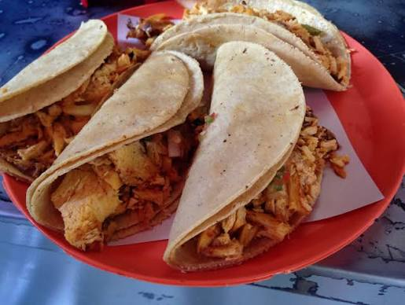

Home
Tacos de pollo crujiente

These crunchy chicken tacos layer seasoned chicken and melty cheese with creamy avocado sauce, homemade sweet and smoky bacon jam, and crispy fried shallots. Pan-fried until golden and crisp, they just might be the best thing you have ever had.
Ingredients
Chicken
- 2 skinless, boneless chicken breasts, halved horizontally
- 2 tablespoons garlic powder
- 2 tablespoons ranch seasoning
- salt to taste
Bacon Jam
- 1 (12 ounce) package bacon, chopped
- 1 onion, diced
- 2 tablespoons apricot jam
Avocado Sauce
- 2 tablespoons olive oil
- 2 avocados, pitted and peeled
- handful of cilantro leaves
- 1 tablespoon mayonnaise
- salt and ground black pepper
- splash of water
Tacos
- oil for frying, as needed, divided
- 2 shallots, sliced
- 8 low carb tortillas
- 1 cup mixed shredded Swiss and Gruyère cheese
Directions
- Season chicken breasts with garlic powder, ranch seasoning, and salt. Heat a cast iron skillet over medium heat; cook chicken until no longer pink at the center and juices run clear, 3 to 5 minutes per side. Remove from skillet and dice chicken into small pieces on a cutting board; set aside.
- For bacon jam, fry bacon pieces and onion together in the same skillet over medium heat, stirring occasionally, until bacon is cooked to your liking. Stir in apricot jam and cook on low heat for about 2 minutes. Refrigerate to cool before serving.
- For avocado sauce, add olive oil, avocados, cilantro, mayonnaise, salt, pepper, and water to a blender and blend until smooth. Set aside.
- Heat oil for deep frying to medium-high heat; deep fry shallots until crisp and golden, about one minute. Remove to a paper towel-lined plate; set aside.
- To assemble, lay one tortilla on a work surface. Add a tablespoon of cheese; top with chicken and another tablespoon of cheese. Fold taco and press together.
- Heat a skillet over medium-high heat with a few tablespoons oil; fry taco in the hot oil until crisp, 3 to 5 minutes, turning once. Remove from the skillet to cool for a few minutes.
- Open the taco; add avocado sauce, bacon jam, and fried shallots and fold back together. Repeat with remaining tortillas, cheese, chicken, avocado sauce, bacon jam, and fried shallots.